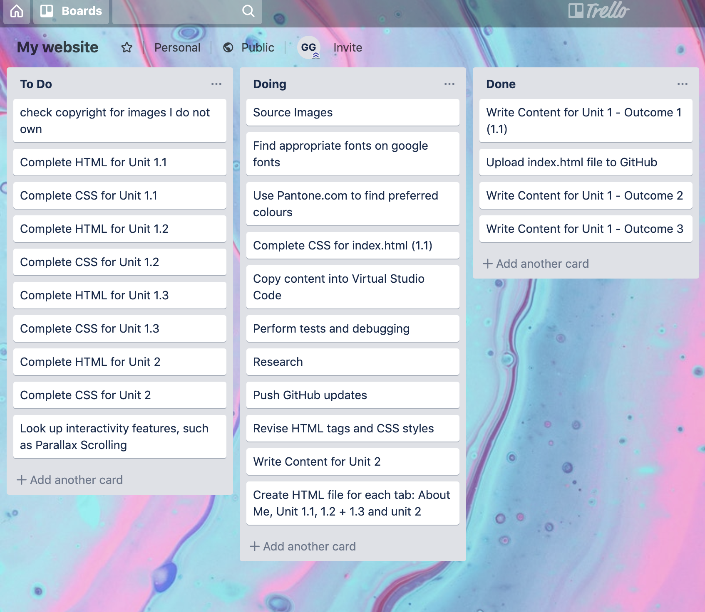

The purpose of IT in modern business is multifold, yet, well-applied technology will have the same thing in common; it will increase the efficiency of operations. Technology can advance the culture, relationship and security of a business, making trade and the transfer of services a more streamlined process.
For instance, technology has transformed the manner in which businesses reach their customers. Far from the days of relying on conferences and cold-calling to network with prospective customers, tech can allow employees to interact with clients in a highly targeted yet speedy manner. In a similar vein, a company’s brand identity and reach can only be aided by having an online presence, regardless of whether they operate on a B2B or B2C model. Both the standard social media channels and complicated digital marketing tools can achieve this end. Customers, on the other hand, can find the solutions to any problems they are looking for in an equally timely manner, whether they are troubleshooting via a search engine, using a company’s Live Chat tool, or speaking to an AI-operated bot.
Shrewdly implemented tech can also streamline a business’ pipeline, making their cash flow and allocation of resources a more transparent and efficient process. For example, monitoring and collecting payments for services is facilitated by e-commerce software, such as eSuite. There exist a multitude of tools and software that are designed to make the day-to-day running of businesses easier. For instance, businesses can apply Kanban learning methods in agile-teamwork tools like Trello. Similarly, businesses can save money on travel and hiring conference rooms by conducting international meetings over the internet.
Moreover, technological infrastructure can enhance a business’ security, protecting financial data and protecting against breaches. Moreover, security tools are able to encrypt sensitive data from users or data pertinent to confidential executive decisions, keeping ideas away from competitors.
Moreover, a business has the technological capacity to research new opportunities ahead of its competition. Simply, the internet is a limitless tool that can allow a business to explore new demographics, conduct market research, create polls and to engage with the consumer in a risk-free manner. In addition, there are various research compendiums, e-learning providers and digital libraries that can arm a business with advanced knowledge on a particular subject area.
There is no surefire way to guarantee the success of a digital process. However, it is definitely possible to assess how successful a project appears to be. For instance, if the customer satisfaction is high, then it clearly a good sign. Additionally, if a customer is requesting more work, then you can be confident. However, in order to make a digital project successful, it is crucial to employ considered and effective protect management.
This entails a thorough planning process, good time management and organisation and delegating tasks in accordance to team member’s skill sets and knowledge bases.
Arguably, the crux of many effective digital projects is communication. This means employing the appropriate communication style for the differing personality types (I’m a fan of the Myers-Briggs principles) and conveying both the bigger picture and the importance of details.
In order to plan the tasks required to build my website, I will adopt the Kanban method of working, using a Trello to do so. Specifically, I will use Trello break down all the steps required in the content writing and image sourcing of my project. I will then create a HTML folder, assigning content to an index page, and subsequent webpages, using Visual Studio Code to do so. Finally and once the ongoing tasks have been marked as ‘complete,’ I will use Trello to break down the tasks required when using CSS to make my website visually appealing.
When considering the risks that may impact a digital project, it is important to be mindful that there can be both known and unknown threats. Obviously, it is harder to prepare against unknown risks but there are certain problems that can cause digital projects to fail and it is crucial to endeavour to fight against them from the start. For example, it is essential to be mindful of any advances to technology (such as iOS) that may alter the course of the software you are developing.
Crucially, a developer must be able to pre-empt any changes within the sector, maintaining adaptability so that they can handle any curveballs as per when they appear. Simply, this risk mitigation can be applied within the planning process. For instance, during the planning process, it is crucial to outline an action plan in order to prepare measures should there be an unexpected delay in a product’s launch, or change in budget. For instance, to prevent there being insufficient resources to execute a project in time, it is essential to map out workflows and demands, identifying potential bottlenecks.
However, one of the most essential tools when mitigating risks lies within the testing process. Regular testing is paramount to finding and resolving bugs, to understand the user experience and to ensuring whether a site or app’s functionality is balanced with its UI. Unidentified bugs can result in poor customer feedback and experience.
It is important to have clearly defined deadlines and goal as clear creative direction is a cornerstone to ensuring a product matches the criteria as outlined from the start. Moreover, when working in a team, it is essential to have clearly defined roles, transparency, and trust in one another’s abilities to ensure that each member is working towards the same goal. A lack of communication, therefore, can be as grave a risk as any, and should a team lose vital time and resources, an entire project can be thrown off track. By the same token, too many committee decisions can derail a project, and undermine the initial vision as outlined in the brief.
In addition, a project needs to have the required security measures in place, as to avoid a breach and to protect the intellectual property underpinning the development of a product.
Choosing the appropriate IT system for a business is essential; it provides a foundation to how your business is run, how employees work and communicate. Some of the key factors to consider when choosing the most appropriate IT system are its functionality (how data is manipulated and processed) and its compatibility (whether two systems can work together effectivity).
However, it is also important to consider the skills and support required to install, implement and maintain a system. In such light, it is also prudent to consider whether a system can be scaled up, thus making it future-proof and in line with the latest developments.
In addition, a business would be wise to consider an IT system’s security, how it can be integrated with current hardware and its management capabilities.
To help a businesses discern its IT needs, it is often useful to perform an IT needs assessment. This can outline the required level of performance so that a system can operate on the scale it required to do so.
Some examples of IT systems a business may consider executive support systems, those that prioritise data analysis, management information systems, those that work with internal sources of information that help organise and manage data. Alternatively, a business may opt for a decision support system, that relies on databases to produce a ‘what-if’ type of analysis.
Conversely, a digital solutions provider can build a bespoke system, designed specifically to suit a business’ needs.
Trello helps support an ‘agile’ work-model, applying the ‘Kanban’ principles to separate tasks into those that have yet to be done, are in progress and that have been done. Trello is therefore highly useful during when reflecting on the success of a project. This has allowed me to stay on task, ensuring that we assigned roles fairly and to managed deadlines. Moreover, a team can colour-code Trello tasks as to highlight who is doing exactly what at any one time.
A further collaborative tool that can facilitate a team’s efficient performance is itHub. GitHub is a code hosting platform, designed to let multiple members of a team work on a project from various locations, pulling code to their device, editing it, and pushing the updated code back to the site for anyone to view and access.
A pertinent legal restraint for digital project lies with the updated GDPR laws, introduced in May 2018. To put it simply, GDPR aims to facilitate data portability, the user’s right to have their information removed from a company’s databases, the user’s right to object to having their data processed and right to object profiling.
This is achieved by providing a business with express, rather than implied permission to store your data. Often, this is as simple as ticking a check-box when visiting a company’s page. Moreover, a customer can choose to be added to a mailing list or even whether their metadata has been stored when using a user’s cookies to personalise their online experience.